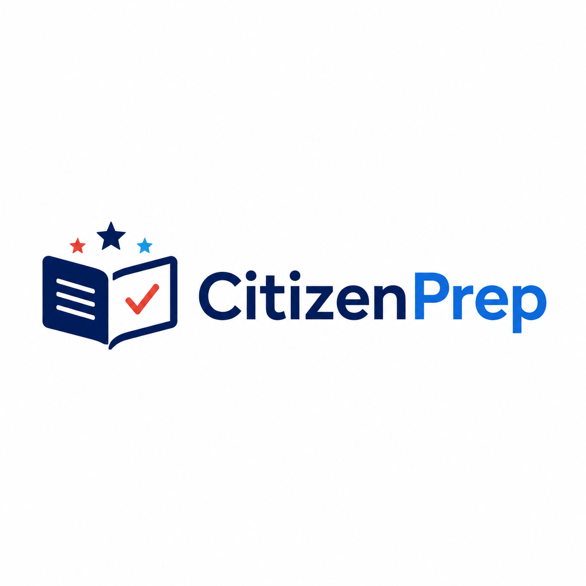

Flashcards
Review one civics question at a time, reveal acceptable answers, and move through official study sets at your own pace.
USCIS-based civics practice
Study for the U.S. naturalization civics test with flashcards, typed-answer practice, mock interview sessions, wrong answer review, and progress tracking.
2025 civics test: 128 questions
2008 civics test: 100 questions
65/20 study mode: 20 questions
No login required
Study tools
Review one civics question at a time, reveal acceptable answers, and move through official study sets at your own pace.
Type answers, check feedback, and see acceptable answer text after each attempt.
Practice with pass rules for 2025, 2008, and 65/20 interview-style sessions.
Revisit missed questions with your last answer, accepted answers, and review status.
Track attempted questions, accuracy, streaks, flashcards viewed, and recent mock results.
Core study content is stored locally, so you can keep studying without a required account.
Study modes
CitizenPrep includes the 2025 civics test set, the 2008 civics test set, and the 65/20 special consideration study set. Current officials and state-specific answers can change, so verify those answers with USCIS resources before your interview.

Android and iOS store links can be added here when the app is approved.
FAQ
Yes. The app includes a 2025 civics test study mode with 128 questions.
Yes. The app includes a 2008 civics test study mode with 100 questions.
No. CitizenPrep is a study tool and does not guarantee interview results.
No. CitizenPrep is independent and is not affiliated with USCIS or any U.S. government agency.